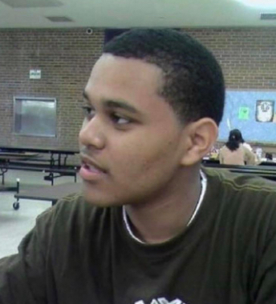

Early Life of Abel
Abel was born on February 16, 1990 and raised in Toronto, Ontario. He was raised in the district of Scarborough by his mother and grandmother. He is an only child of Ethiopian Amhara immigrants Makkonen Tesfaye and Samrawit Hailu. Abel talks about his childhood and how he has an estranged relationship with his father and would only see him every few years. He talks about him not being a bad father, rather he was just never around. He dropped out of high school and moved in with a couple of his friends. They lived a more “free” lifestyle where he ended up homeless at times and had been incarcerated on several occasions.
Childhood
Inspiration Michael Jackson

Inspiration
Abel has said that Michael Jackson, Prince, and R. Kelly were his main musical inspiration artists. Michael Jackson’s music was a big key in wanting him to become a singer, and he’s referenced a few songs including “Dirty Diana” as one example. His vocal style has been influenced by Ethiopian singers, one of them being Aster Aweke. He discussed how he is heavily influenced by 1980’s music and gives credit to Grand Theft Auto: Vice City for opening his eyes to the music of that era.
Career Outside of Music
Abel has been a part of a few different acting segments. His first one was his appearance in Uncut Gems, an American crime thriller. He’s also been a musical guest 3 separate times on Saturday Night Live and been apart of a skit on the show. He helped co-write and star in an episode of American Dad and has voiced three characters during the 200th episode of Robot Chicken. One of his most recent attributes in acting was the HBO television series The Idol that ran for 1 season.